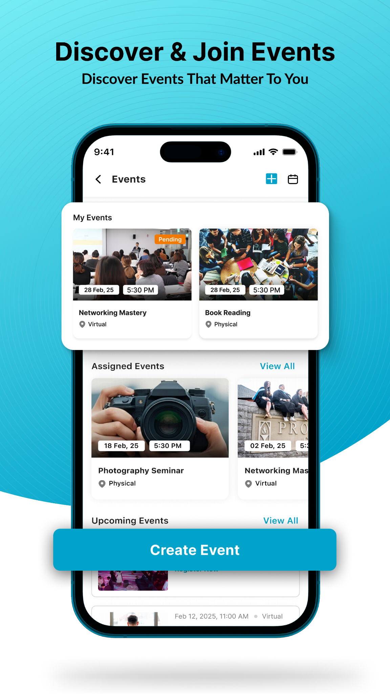
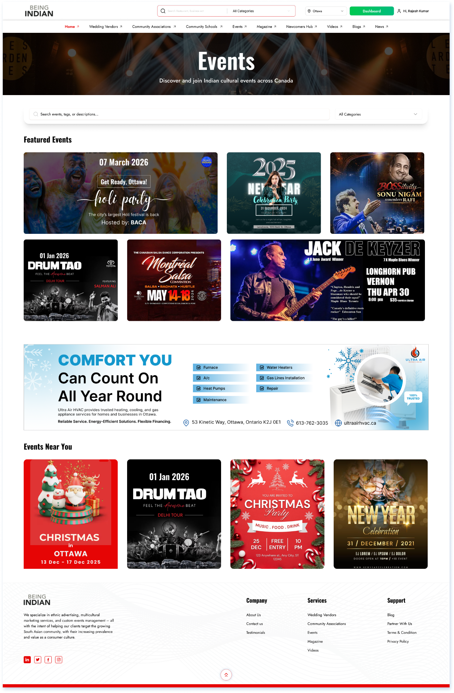
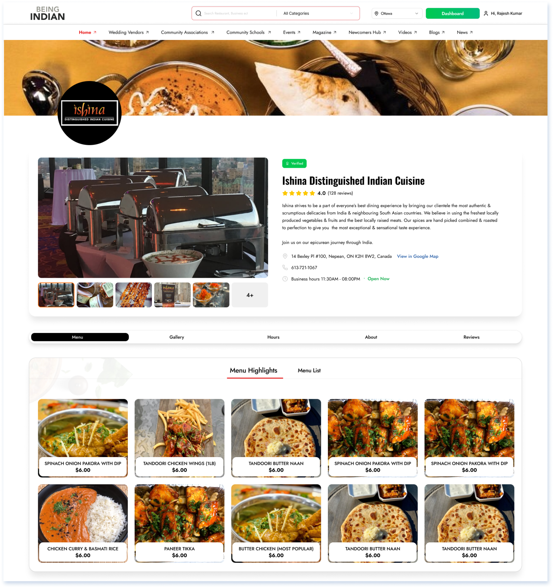
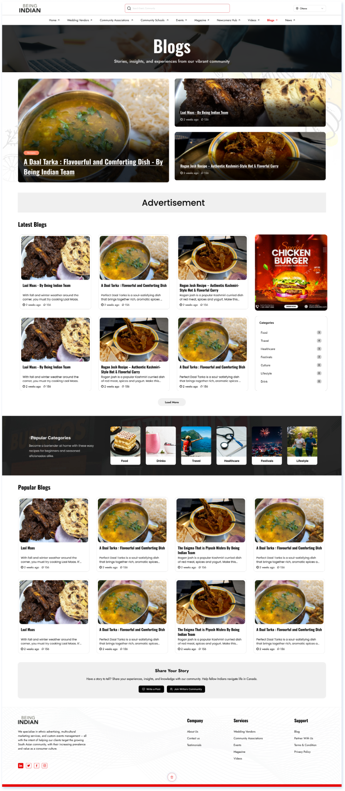
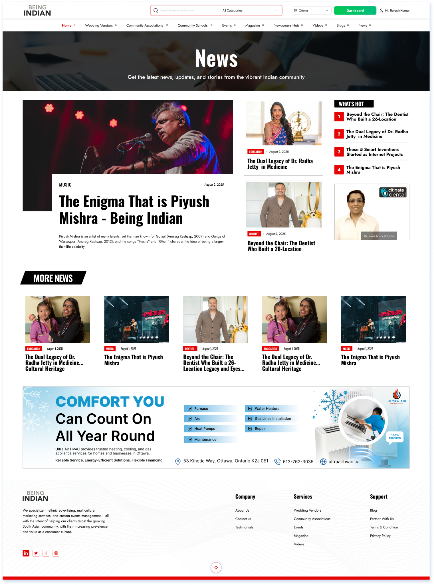
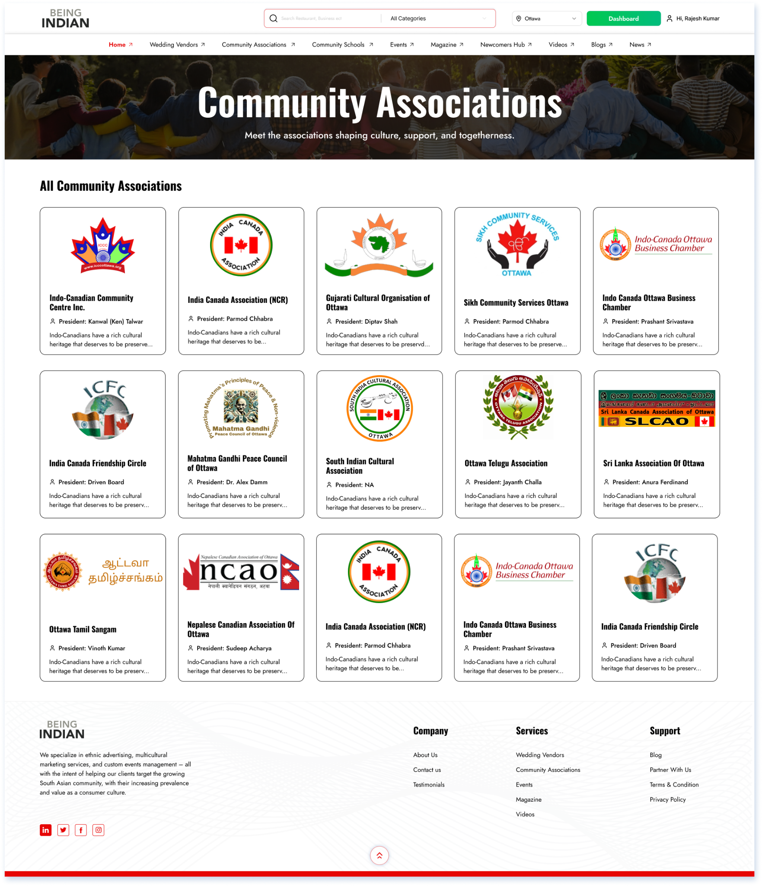

Being Indian — designing community discovery at scale
A discovery-led platform for the Indian community in Canada, combining local businesses, associations, events, magazine, blogs, news and community content.
Discovery is the product.
Being Indian has multiple content and service categories, so the core UX challenge is helping users move naturally between local discovery, businesses, cultural events and editorial content.
Product Designer
Worked on page structures, discovery patterns, business profiles, events, community associations and content-led experiences across the responsive website.
From complexity
to clarity.
The work covered product structure, user journeys, interaction patterns, high-fidelity UI and reusable systems.
Map
Organize businesses, associations, events and content into understandable categories.
Discover
Design search, filters, location context and browse patterns.
Detail
Create rich business, restaurant, event and editorial detail pages.
Scale
Use repeatable cards, grids, metadata and content modules across the ecosystem.
Designed for
real product flows.
Screens from the product work you shared, presented as evidence of the workflows and interface systems.






A cohesive community ecosystem across discovery and content.
The design connects local services and cultural content through consistent navigation, cards, metadata and detail-page patterns.